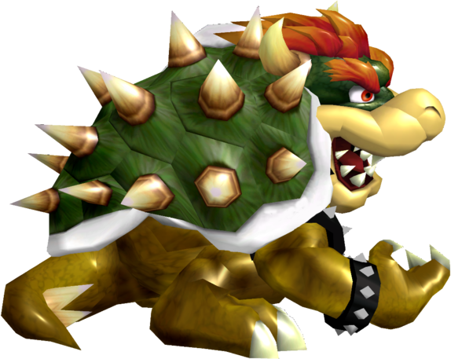

|  | Rank 25th of tier list : BOWSER |
| Weight | |
|---|---|
| 1st heaviest | |
| Shield stats | |
| Grab range | 23th longest |
| Roll lenght | 26th longest |
| Shield size | 1th biggest |
| Wavedash lenght | 13th longest |
| Movement stats | |
| Walking speed | 26th fastest |
| Turning speed | 24th fastest |
| Running speed | 11-15th fastest |
| Aerial stats | |
| Jump squat | 9 frames (26th fastest) |
| Short hop | 18-23rd highest |
| Aerial speed | 20th fastest |
| First jump height | 17-18th highest |
| Seconde jump height | 13th highest |
| Total jump height | 24-25th highest |
| Average fall speed | 11th fastest |
| Fast falling speed | 13th fastest |
| Falling speed | 12-14th fastest |
| Ledge stats | |
| 0-99% ledge roll | 4th longest |
| 100%+ ledge roll | 9th longest |
| 0-99% ledge attack range | 1st farthest |
| 100%+ ledge attack range | 18th farthest |
| Intangible ledgedash (Optimal/Perfect) | 8 frames |
| Notable players | |
| DJ Nintendo | |
| Smashboard forum | |
| http://smashboards.com/forums/bowser.65/ | |
| Technique guide | |
| https://youtu.be/e1JT3d5TT6g | |
Bowser is currently ranked 25th in the G tier in the current Melee list. Among Bowser's positive traits is his difficulty in getting KO'd due to his high weight and rather fast falling speed ; additionally, he has among the most powerful attacks in the game (most notably his forward smash), as well as some very good aerial attacks, most notably his forward and upward aerials. However, he suffers due to his large size and falling speed, making him extremely easy to combo. His moves are also very sluggish, and his approach is among the worst in the game, with very laggy aerials, poor jumping ability (leading to an awful SHFFL), a short wavedash, poor projectile, and slow, predictable recovery. Bowser is among few character to lack any positive matchups, and only two, against Yoshi and Pichu, are considered even.